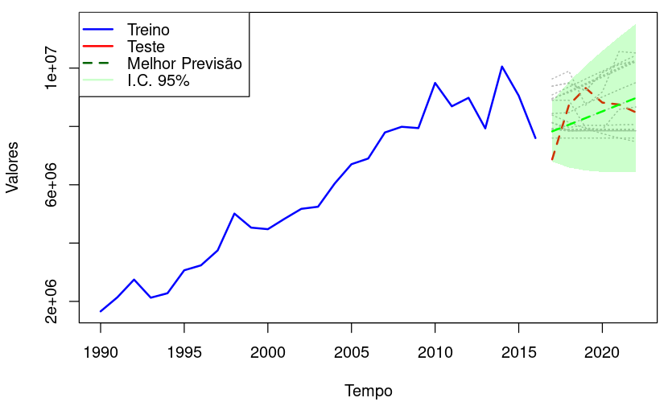
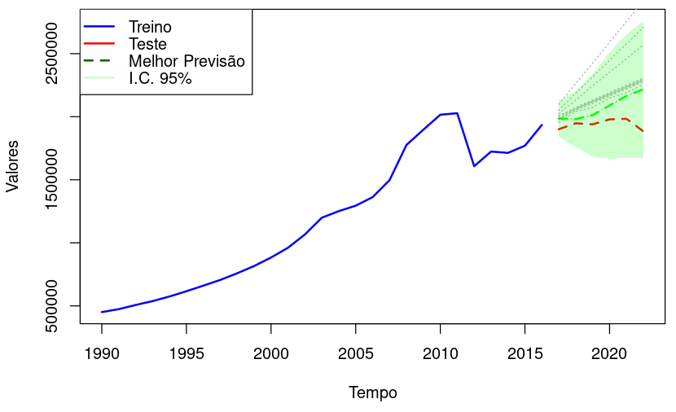

ForeSight - TimeSeries Forecasting System
Dashboard
Importar Dados
Modelos de Previsão
Análise de Resultados
Configurações
Perfil
Visão Geral dos Dados
Configuração de Modelos de Previsão
Tipo de Modelo:
ARIMA
Suavização Exponencial
LSTM
Parâmetros:
Executar Modelo
Salvar Configuração
Análise dos Resultados
MAE:
1.23
RMSE:
2.45
MAPE:
10%
Previsão com Suavização Exponencial

Previsão com ARIMA

Baixar Resultados
Anotações
Salvar Anotação